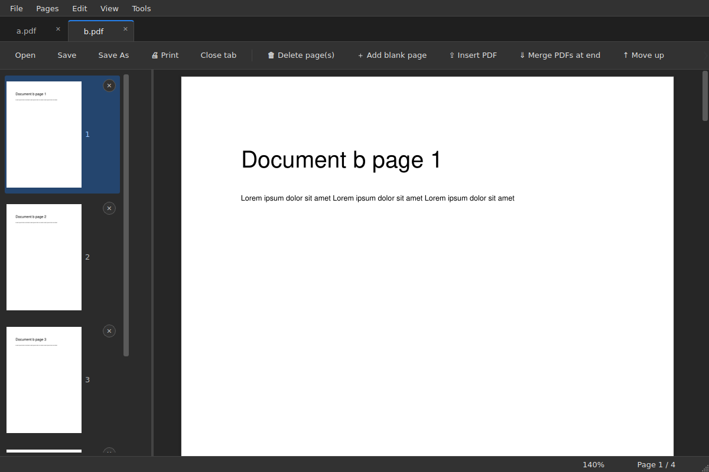
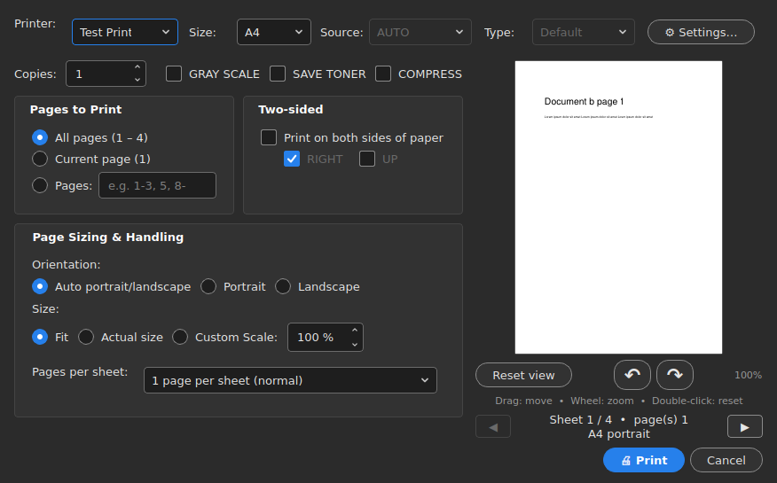

Read, edit and print PDFs in one window.
PDF Studio opens every file in its own tab, lets you rearrange pages by dragging, and has a print dialog that reaches the printer driver: paper tray, heavy paper, duplex flip and a live preview.
Windows 10 and 11. Or run it from source with Python 3.10+.

Everything stays in one window
Open a second PDF while the app is running and it joins the same window as a new tab. Nothing launches twice.
- Tabs, like a browser
- Each file gets its own tab in the order you opened it. Middle-click closes a tab; Ctrl+PgUp and Ctrl+PgDn move between them.
- Continuous scrolling
- Pages flow like one long document. The status bar shows the current page out of the total and the zoom level; Ctrl and the mouse wheel zoom, middle-click starts auto-scroll.
- Edit pages
- Delete, add a blank page, move up or down, rotate, insert another PDF or merge PDFs at the end. Undo steps back with Ctrl+Z.
- Edit text
- Switch on text editing to change lines of text right on the page.
- Drag pages out
- Drag a thumbnail to a folder or the Desktop to save it as a separate PDF or JPG. Select several pages to export them together.
- Explorer right-click
- Select PDFs and images, right-click and combine them in one step. Select a single file to open it directly.
A print dialog that knows your printer
The dialog talks to the Windows print driver, so the options you need for office copiers and plotters are right there.
- Paper: A0 to A5 or a custom size, orientation, scale to fit or a fixed percentage.
- Pages: all, current page or a range such as 1-3, 5, 8-; several pages per sheet.
- Two-sided: flip on the long or the short edge, with the curl drawn in the preview.
- Driver options: paper source (auto or the bypass tray) and paper type, right next to the printer and size.
- Modes: save toner and grayscale. Drag the preview to nudge the content on the sheet and use the mouse wheel to zoom in on it.

Install
Grab the .exe from the latest release, or run the script yourself.
From source
Needs Python 3.10 or newer.
pip install -r requirements.txt python pdf_studio.py file.pdf python pdf_studio.py --light
The last line starts the light theme; the default is dark.
Right-click menu and default app
Adds Combine to the Explorer menu, then opens Windows settings so you can choose PDF Studio as the default PDF app.
python pdf_studio.py --install python pdf_studio.py --uninstall
Build the .exe yourself
pip install pyinstaller pyinstaller --onefile --windowed ^ --name PDFStudio pdf_studio.py
PDF Studio یک نرمافزار سبک برای خواندن و ویرایش PDF در ویندوز است. هر فایل در یک تب باز میشود، صفحهها را میتوانید با کشیدن جابهجا کنید و پنجرهٔ چاپ آن به تنظیمات درایور چاپگر (سینی دستی، کاغذ ضخیم، دوطرفه) دسترسی دارد.